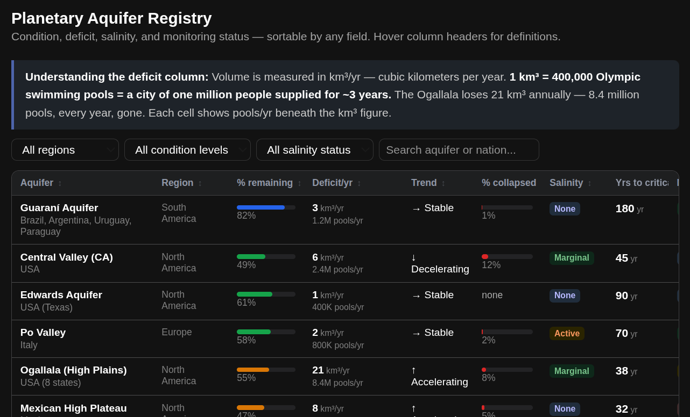

One Year at a Time
The Colorado River is being managed in twelve-month survival increments. That is not a water policy. That is a confession.
Owen's Applied Thinking — owencorpening.substack.com Global Water Engineering Surge — Foundation Series: Parts I–XI | Surge Phase: Current
Executive Summary
The Trump administration announced emergency measures on April 18, 2026 to prevent Lake Powell from falling below its hydropower threshold by August. The reservoir is 27% full. Lake Mead is 32% full. The Rocky Mountain snowpack is 22% of average — the smallest on record. The seven-state negotiating framework is deadlocked. The response is one more year of emergency releases.
This piece argues that the visible reservoir crisis and the invisible aquifer crisis are the same system failing in two places simultaneously. The Ogallala Aquifer — which directly feeds the pressure dynamics of the Colorado basin — is losing 21 km³ per year (8.4 million Olympic pools). No unified rating system exists for aquifer condition. No long-term engineering solution is on the negotiating table. The Planetary Aquifer Registry, introduced in this piece, is proposed as the first step toward making the invisible crisis as legible as the visible one. The infrastructure to begin reversing both exists today. The decision to use it does not.
Key claims:
- Emergency allocation measures are zero-sum; engineering solutions are not
- The Ogallala's depletion is a cascade driver of Colorado River pressure — unaddressed in any current negotiating framework
- No planetary aquifer registry exists; its absence is a policy choice, not an oversight
- COTS water logistics infrastructure (VLCC-ZLD, rail, trucking) is deployable now, on a human lifespan — not a generational timeline
I. Today
On April 18, 2026, the Trump administration announced emergency measures to prevent disaster at Lake Powell, the nation's second largest reservoir. The reservoir is 27 percent full. Lake Mead, the nation's largest, is 32 percent full. The snowpack feeding the Colorado River's watershed is 22 percent of average — the smallest on record.
The emergency measure: release water from Flaming Gorge Reservoir in Wyoming and send it hundreds of miles downstream to prop up Lake Powell through August. At the same time, cut the water flowing out of Lake Powell into Lake Mead — which means less water for California, Nevada, and Arizona.
Thirty-five million people. Five million acres of farmland. One river. One year of runway.
"It's avoiding catastrophe, and it's basically a one-year solution." — Mark Gold, Metropolitan Water District of Southern California
The seven states that share the Colorado River have been negotiating a long-term plan. Those negotiations are deadlocked. The states' representatives have not met in person since January.
This is not a new crisis. The river has been shrinking since 2000. The reservoirs have been dropping for years. The bathtub ring on the canyon walls at Lake Powell — the white mineral stain showing where the waterline used to be — is one of the most photographed symbols of water scarcity in the American West.
And the response, in 2026, is: one more year.
II. The Visible and the Invisible
The reservoir is the headline. It has a shoreline. It has a bathtub ring. It photographs.
The aquifer is the silence beneath it. No shoreline. No ring. No photograph. Just a number declining in a database that most people have never seen and no one has ever rated.
They are the same system failing in two places simultaneously.
When the reservoir drops, cities and farms that depend on surface water increase their extraction from groundwater. The aquifer — already depleted — takes on additional load. When the aquifer drops, the springs and seeps that once fed the rivers lose pressure. The rivers carry less water. The reservoir receives less inflow. The spiral tightens.
The Ogallala Aquifer underlies eight states from South Dakota to Texas. It is being drawn down at 21 cubic kilometers per year. One cubic kilometer is 400,000 Olympic swimming pools. That is 8.4 million pools per year, drained and not refilled, every year, for decades.
The Ogallala's depletion is documented in the same technical literature as Lake Powell's. The connection between them — reduced aquifer pressure, increased surface water demand, accelerated river extraction — is understood by hydrologists. It does not appear in emergency press releases. It does not appear in negotiating frameworks. The seven states are arguing about surface water allocations established in 1922, as if the aquifer beneath them were not also collapsing.
The reservoir is the headline. The aquifer is the silence beneath it. They are the same system failing in two places simultaneously.
III. What the Colors Mean
The Planetary Aquifer Registry — interactive version embedded below — tracks 14 major aquifer systems across four condition tiers: Critical, Severe, Moderate, and Low.

Critical does not mean concerning. Critical means the system is on a measurable countdown to irreversible damage at current extraction rates. Six of the fourteen systems in the registry are Critical. The Upper Ganges: 16 years. The Arabian Aquifer System: 18 years. The North China Plain: 20 years. The Sana'a Basin in Yemen: 8 years, with zero monitoring infrastructure and active saltwater intrusion.
Hover over the deficit column. The Ogallala: 21 km³/yr — 8.4 million pools. The Upper Ganges: 31 km³/yr — 12.4 million pools. The Indus Basin: 27 km³/yr — 10.8 million pools.
These are annual figures. Not cumulative. Every year.
The Cascade Score field — pending full implementation in the registry — will show what each aquifer's depletion does to adjacent systems. The Ogallala's cascade score points directly at the Colorado River compact. Less groundwater pressure in Kansas and Oklahoma means more demand on surface water. More demand on surface water means more pressure on Lake Mead and Lake Powell. The emergency release announced this week is, in part, a downstream consequence of a groundwater crisis that no emergency measure addresses.
IV. The Absence
No planetary aquifer registry exists.
Credit ratings exist for sovereign debt. Bond markets require them. Safety ratings exist for nuclear plants. Regulators require them. Inspection regimes exist for bridges, aircraft, and food processing facilities.
Nothing equivalent exists for the water systems that civilization depends on.
The Ogallala has been measured. The data exists in USGS databases, in academic literature, in state water authority reports. It has never been assembled into a unified rating system with standardized methodology, public accessibility, and a framework for prioritizing intervention.
That absence is not an oversight. It is a choice — or rather, the accumulated result of thousands of smaller choices to treat each aquifer as a local management problem rather than a global infrastructure failure. The Ogallala is Kansas's problem. The Arabian Aquifer is Saudi Arabia's problem. The Sana'a Basin is Yemen's problem. None of them is anyone's problem in aggregate.
No planetary aquifer registry exists. That absence is not an oversight. It is a choice.
The registry proposed in this series is not a research project. It is an infrastructure proposal. The same way a credit rating changes the cost of capital for a borrowing government, an aquifer condition rating changes the political cost of inaction for a water authority. You cannot argue that a system rated Critical with 8 years to irreversible damage is not your problem. The number is public. The timeline is public. The inaction is public.
V. The One-Year Trap
Emergency measures are not policy. They are the cost of not having policy.
Each one-year solution defers the reckoning and slightly worsens the conditions that will produce the next crisis. Releasing water from Flaming Gorge to prop up Lake Powell reduces Flaming Gorge's buffer for the following year. Cutting the outflow from Lake Powell into Lake Mead reduces Lake Mead's buffer. The states downstream receive less water than their compact allocations require. Arizona has already warned it may sue.
The negotiators deadlock because allocation politics are zero-sum. Every acre-foot one state keeps is an acre-foot another state loses. Treaties and compacts divide a shrinking supply. They do not address the shrinkage.
Engineering is not zero-sum.
More water changes the negotiation. A desalination facility on the Sea of Cortez, powered by co-located generation, delivering into the Colorado basin at industrial scale, does not ask California and Arizona to agree on who gets less. It asks them to agree on who builds what. That is a different conversation. It has different politics. It has different outcomes.
The infrastructure required to make that conversation possible is not science fiction. It is not a 50-year horizon. Parts of it — the VLCC-ZLD platforms, the rail water logistics, the last-mile distribution networks — exist today, certified and operational, waiting to be pointed at the problem.
The long-term infrastructure — the SMR barges, the permanent pipeline corridors, the managed aquifer recharge networks — is a generational project. 'Generational' sometimes means you will never see it. The people drinking unsafe water in Yemen's Sana'a Basin will not see it. The farmers losing the Ogallala beneath their fields in West Texas will not see it.
Look out your window. The solution is already in the harbor. We have not asked it to do this job yet.
VI. The 1900 Baseline
The target is not an engineering abstraction. It is a known historical state.
1900 is the last year of broad hydrological equilibrium before industrial-scale groundwater extraction began. Ghost rivers that have not flowed in a century. Dry lake basins that were living ecosystems within living memory. Coastal aquifers that once pushed the ocean back from the land's pores.
Restoring aquifer pressure to that baseline is not an act of nostalgia. It is an act of infrastructure. The same way a city restores a collapsed bridge to its rated load capacity — not because the old bridge was sentimental, but because the rated capacity is what civilization requires.
As the water table rises, surface drainage reverses. Historical riverbeds begin to carry baseflow again. The springs that once fed the Colorado's tributaries reactivate. Lake Powell's inflow increases. The bathtub ring descends.
The emergency releases stop being necessary.
That is not a 2026 outcome. It is not a 2040 outcome. It is the outcome of a sustained infrastructure commitment measured in decades, funded by the revenue streams of the corridors that carry it, justified by the cascade effects that compound its return.
But it begins with the decision to stop managing the crisis one year at a time.
The solution is not in the negotiating room. It never was.
⚖️ Professional Standard of Practice
In accordance with Global Engineering Reserve (GER) mission standards, this piece applies the principle that emergency allocation measures are a symptom of deferred infrastructure, not a substitute for it. The Planetary Aquifer Registry proposed here is not a research deliverable — it is an infrastructure precondition. Ratings create accountability. Accountability changes political cost. Changed political cost makes engineering solutions possible.
The 1900 baseline target is not a policy position. It is a rated design condition. The same engineering methodology that specifies a bridge's load capacity specifies an aquifer's sustainable yield. Managing below that yield without a remediation plan is a failure of professional standard — whether the engineer is designing a structure or advising a water authority.
Owen's Applied Thinking — It's not activism. It's not theory. It's engineering. owencorpening.substack.com